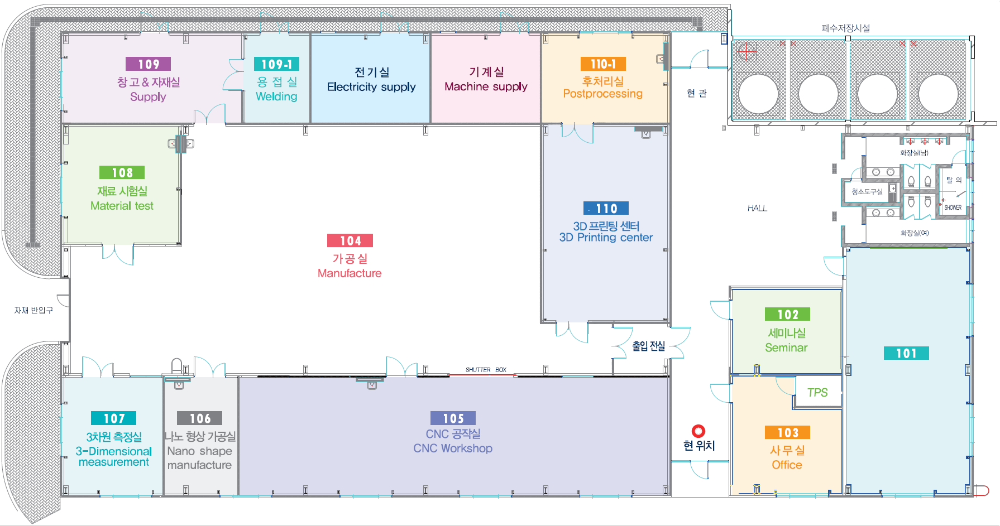

장비 상태 모니터링 대시보드
데이터 연동 중...
도면 위의 장비를 터치하거나 하단 목록에서 검색하여 상세 제원을 확인하세요.
사용가능
사용 중
불용
🔄 새로고침
📱 버튼이 작다면 도면을 확대해 보세요
🔍 크게 보기

3D Laser Microscope
3D Printer
3D Scanner
📋 전체 장비 현황 목록
구글 시트에 등록된 모든 장비가 자동으로 표시됩니다.
전체
사용가능
사용 중
불용
상태
장비 이름
×
📍
위치 : 정보 없음
제조사 (Maker)
-
시리얼 번호 (S/N)
-
담당자 (Manager)
-
주요 제원 (Spec)
-
🛠️ 점검 및 수리 이력 (History)
-
닫기
📍 도면 빈 공간을 클릭하면 좌표가 표시됩니다.